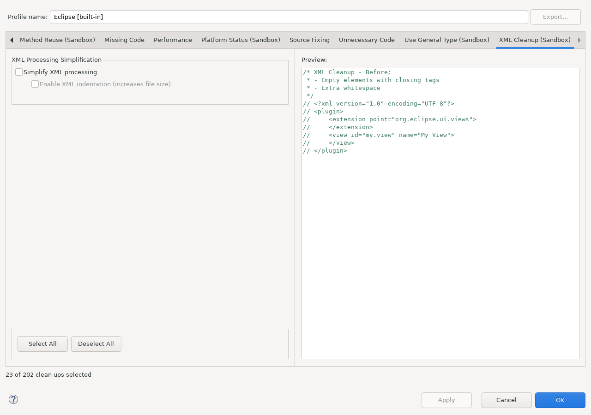
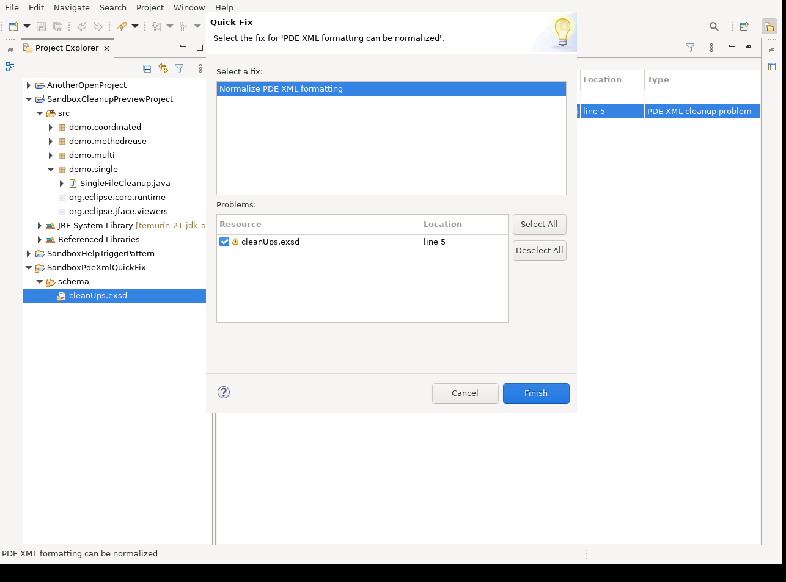

Enable XML Cleanup (Sandbox) in a cleanup profile, or select a supported PDE resource or project and invoke Clean Up PDE XML from its context menu.

Select a supported PDE descriptor or schema and invoke Find PDE XML Cleanup Problems. Sandbox analyzes the selected resource and creates a non-persistent entry in the Problems view when formatting can be normalized. Open Quick Fix... on that marker and select Normalize PDE XML formatting.

The shown action is an executable Workbench state, not a mock-up or disabled configuration. The generating SWTBot scenario selects the real marker, verifies that Finish is enabled, applies the resolution, checks that the marker disappears, and confirms that the schema root, upstream comment, and schema documentation remain present after formatting.
The canonical image is generated from
org.eclipse.jdt.ui/schema/cleanUps.exsd at the repository's exact pinned JDT UI revision. Its
machine-readable provenance records the
repository, ref, full commit, source path, byte count, and SHA-256 source digest.
<plugin>
<extension point="org.eclipse.ui.views">
<view
class="com.example.MyView"
id="com.example.myview"
name="My View" />
</extension>
</plugin>
<plugin>
<extension point="org.eclipse.ui.views">
<view class="com.example.MyView"
id="com.example.myview"
name="My View"/>
</extension>
</plugin>
When tab conversion is enabled, only structural leading indentation is converted. Attribute values and text content are not rewritten as indentation.
The cleanup is restricted to supported PDE descriptors and schema resources in approved project locations,
such as project-root metadata, META-INF, and OSGI-INF. It removes redundant whitespace,
normalizes formatting, and is expected to be idempotent. XML element structure, attributes, and meaningful text
must remain equivalent.
Unsupported resources, malformed XML, mixed-content cases that cannot be formatted safely, and paths outside the PDE scope are left unchanged or reported rather than processed as generic XML.
Java cleanup preview screenshots do not represent the direct PDE XML context command. The configuration image shows the cleanup options; the Problems-view image proves marker and Quick Fix integration; the source-control diff remains the authoritative result evidence for the selected XML file.
The configuration image and Problems-view Quick Fix image are generated from a real Eclipse Workbench by
SandboxHelpScreenshotsMergeGateSWTBotTest. The PDE scenario consumes a locally provided, exactly
pinned schema corpus and performs no network access itself. Run the Maven profile help-screenshots
under Xvfb after UI changes.